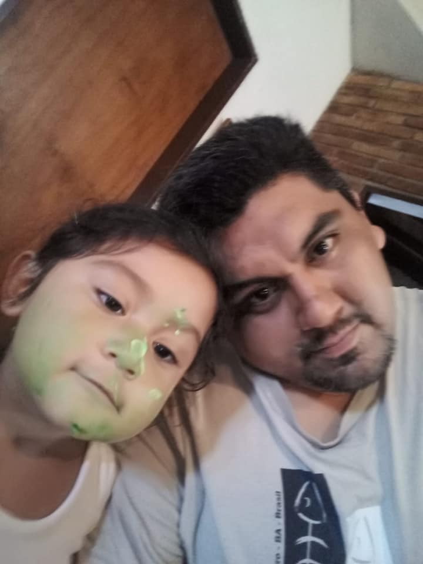

Me llamo Mariano A. Mattei.
Naci y creci en Buenos Aires. Desde que tengo memoria siempre me gusto la musica, comida, bailes y demas cosas del mundo arabe. Despues de mucho tiempo me enseñaron que mis raices venian del Líbano, y mas encantado estuve.
Con el pasar de los años me interiorice en estas cosas.Hace unos años fui a aprender el idioma, con mi esposa, y pudimos asistir
por dos años. Luego, por cuestiones personales no continuamos pero sigue siendo un tema pendiente.
Por otro lado la gastronomia fue algo que siempre me gusto. Mi madre me cocinaba unas comidas "raras" pensaba yo, pero deliciosas. Cuando fui mas grande ella me enseñó al igual que mi abuela le enseño a ella. Es por eso que intente crear esta pagina para compartir lo que me enseñaron con el pasar de los años, y algunas cosas que me anime yo mismo a cocinar mirando recetas y videos en youtube.
Espero disfruten de esta pagina y se animen tambien a cocinar algo. A mi me encantan, y a vos?